1. GNU/Linux
Utilizaré el sistema operativo Lubuntu 14.04.
1.1 Tarea programada diferida
Hacer un ejemplo de tarea programada diferida (at). Por ejemplo ejecutar el apagado de la máquina con el comando "shutdown".
Primero, empezamos instalando el paquete 'at'.
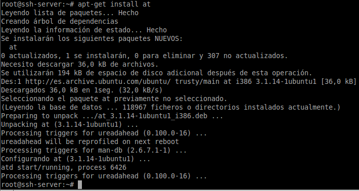Seguidamente, creamos una instancia de 'at' indicándole que de comienzo ahora. A continuación, le indicamos que se reinicie el equipo.
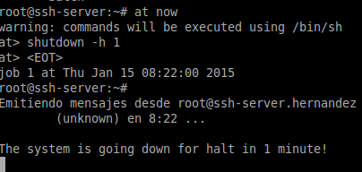Por último, también le podemos indicar una instancia de at para cierto tiempo indicándole la fecha con el tiempo con el parámetro -t. Le indicamos, en este caso, que sea el 15 de Enero a las 08:30.
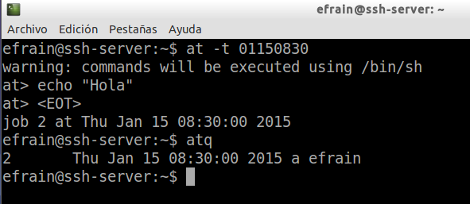1.2 Tarea programada periódica
Hacer un ejemplo de tarea programada periódica (crontab). Ejemplos: #!/bin/sh # Mostrar mensaje en pantalla DISPLAY=:0 export DISPLAY zenity --info --text="Tarea ejecutada" #!/bin/bash # Añade la fecha/hora a un fichero date >> /home/usuario/cron.log .
El primer paso será instalar el paquete "cron".
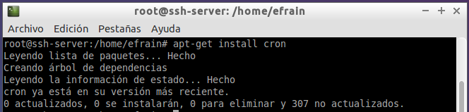A continuación, comenzamos a editar el archivo de crontab, indicando el comando crontab -e.
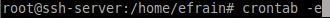Le indicamos la opción 2, para editar el archivo con nano.
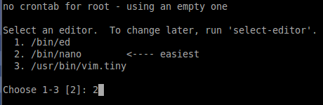Ahora, le añadimos una línea más indicándole que cada minuto se va ir añadiendo la fecha al archivo .log que tengo alojado en el escritorio:
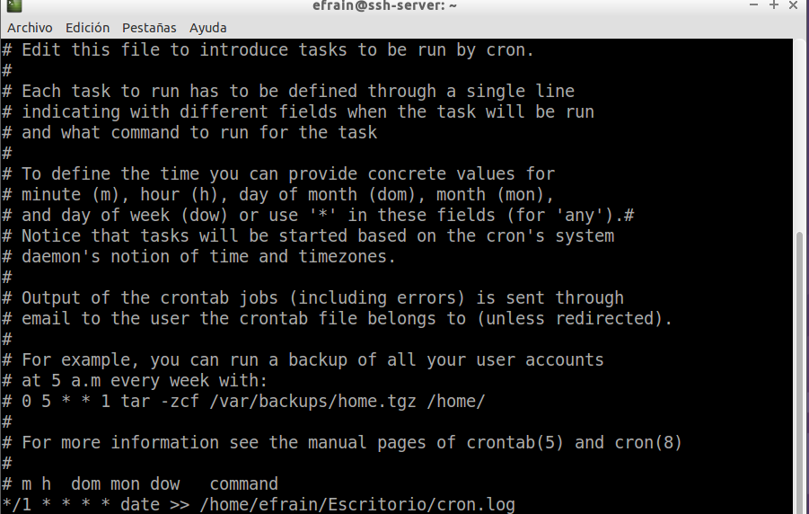Comprobamos que está todo correcto:
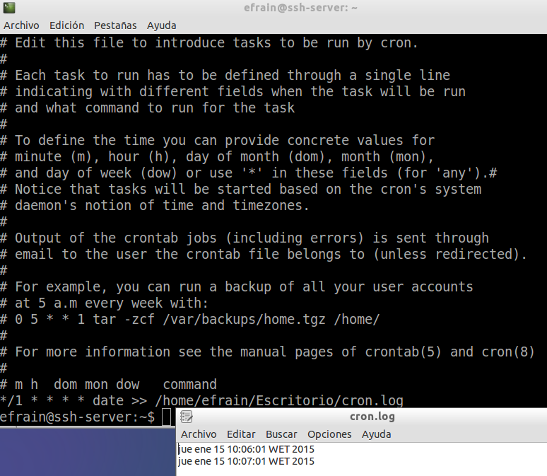1.3 Tarea programada asíncrona
Hacer un ejemplo de tarea programada asíncrona. Elegir alguna tarea útil para la administración de sistema. En mi caso, elegí el script que propuso el profe en el ejercicio anterior, en el que sale un mensaje por pantalla.
Cree el script .sh en el escritorio y seguidamente lo moví al directorio /etc/cron.daily para que así se ejectuara de forma que está configurada este cron.daily
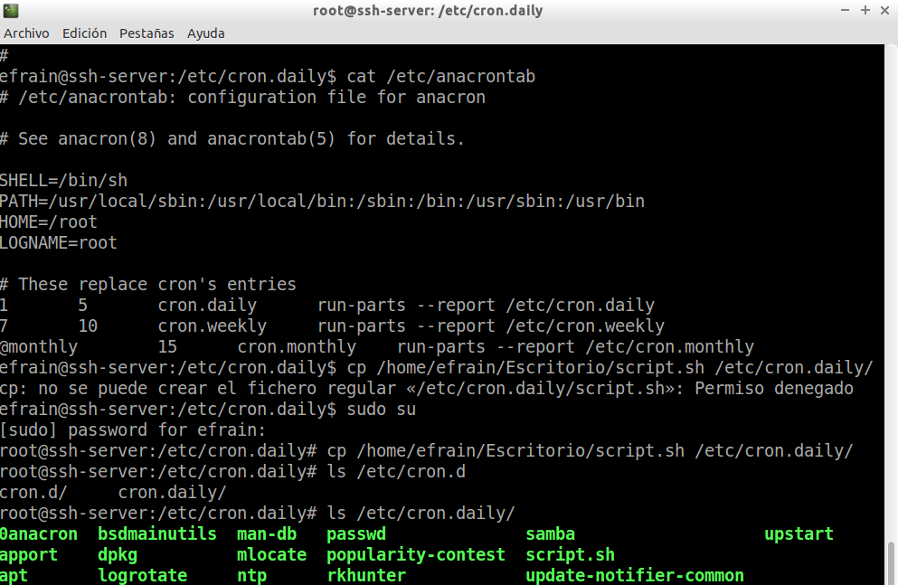Por último, forzamos la ejecución del cron.daily con "anacron -n".
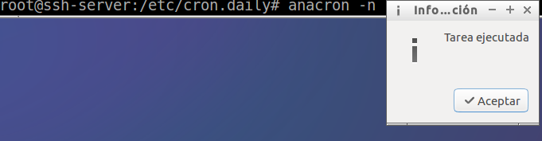2. Windows
En Windows 7 para iniciar el programador de tareas hacemos "Panel de control -> Herramientas administrativas -> Programador de tareas".
2.1 Tarea programada diferida
Hacer un ejemplo de tarea programada diferida de ejecutar el apagado de la máquina. Para ver la ayuda del comando shutdown hacemos "shutdown /?". Programar un apagado usando "shutdown /s".
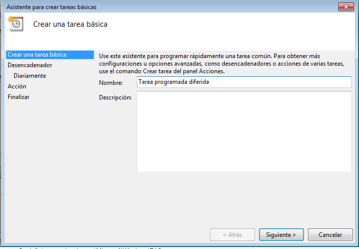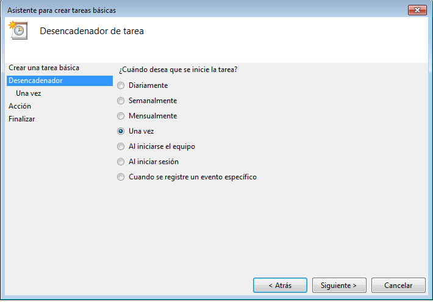

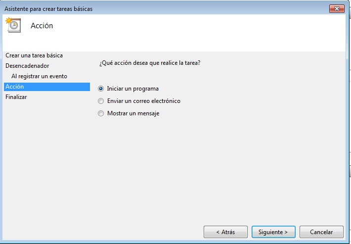
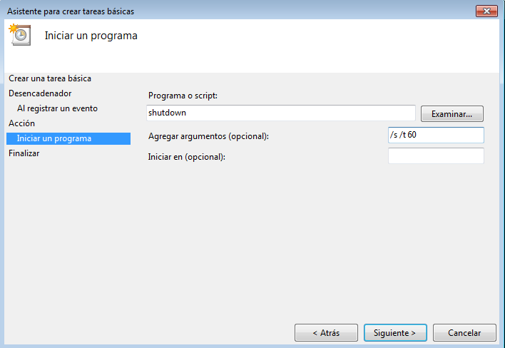
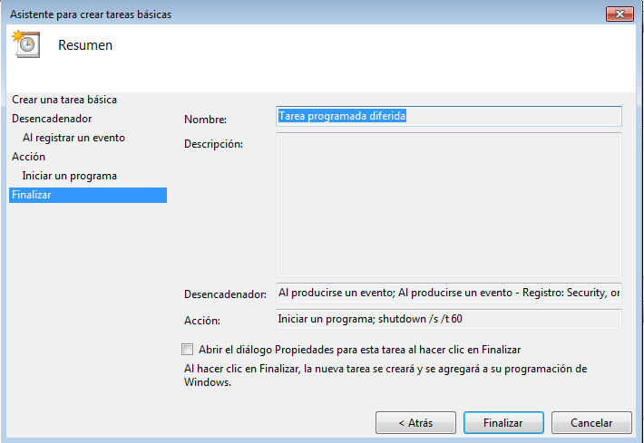
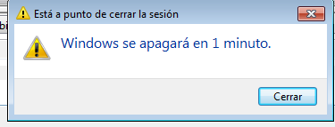
2.2 Tarea programada periódica
Hacer un ejemplo de tarea programada periódica de mostrar mensaje a pantalla.
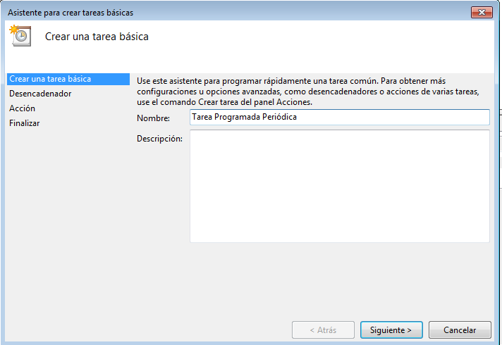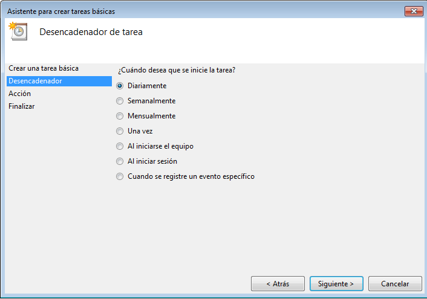
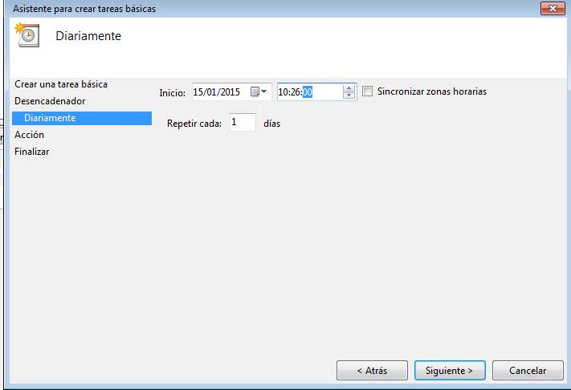
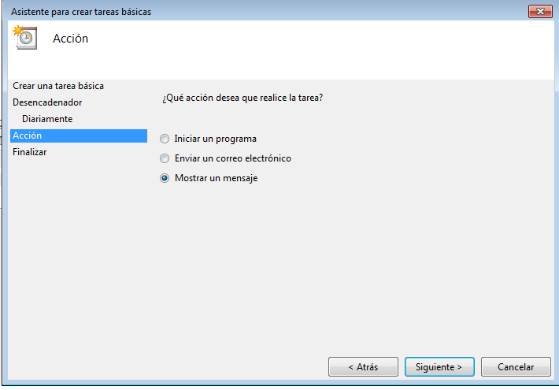
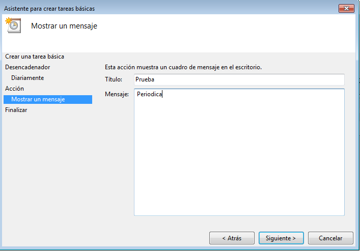
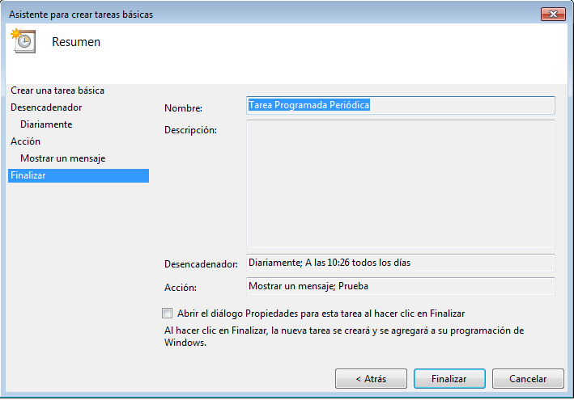
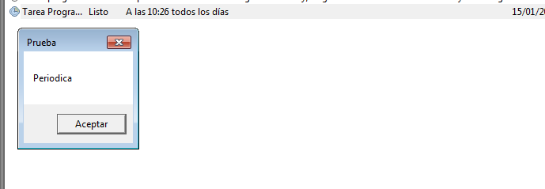
2.3 Tarea programada asíncrona
Hacer un ejemplo de tarea programada asíncrona elegida por el usuario. En mi casoo, utilizaré el comando chkdsk para comprobar el disco duro si se encuentran errores.
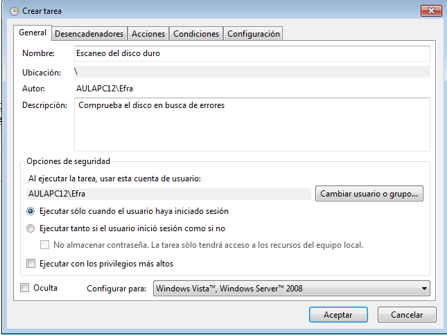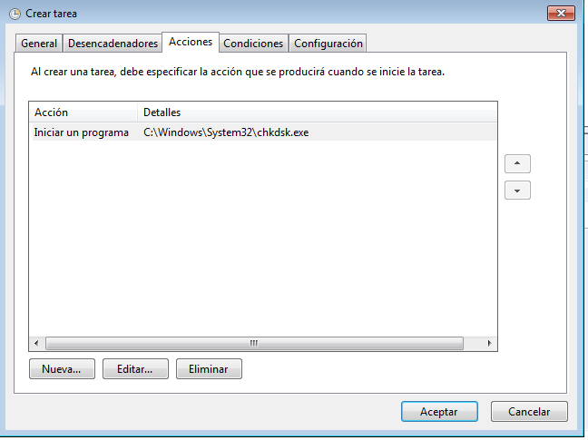
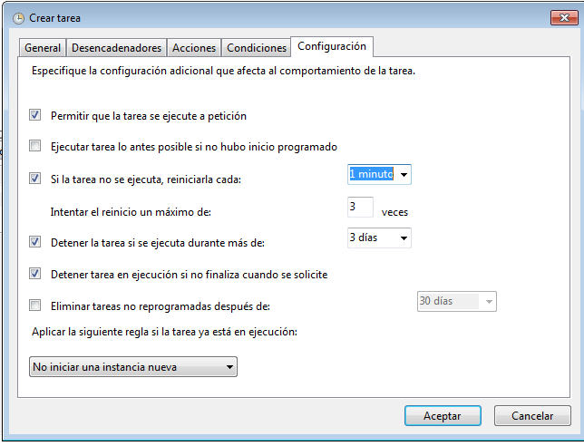